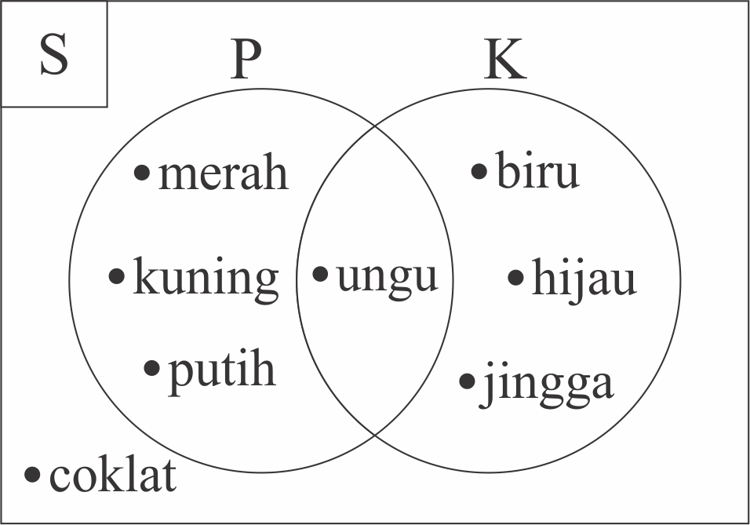

4.2 GABUNGAN HIMPUNAN
Cobalah jawab soal di bawah ini!
 Petunjuk (klik untuk menyembunyikan petunjuk)
Petunjuk (klik untuk menyembunyikan petunjuk)- Isilah kotak kosong dengan jawaban yang tepat.
- Setelah menjawab soal, tekan tombol "Cek Jawaban"
- Jika jawaban kamu benar, akan muncul icon
 .
. - Jika jawaban kamu salah, akan muncul icon
 , dan tombol "Ulang".
, dan tombol "Ulang". - Tekan tombol "Ulang" untuk mengulang menjawab soal.
Diketahui A = {x | 6 ≤ x ≤ 10, x ∈ bilangan genap} dan B = {x | x ≤ 20, x ∈ bilangan asli kelipatan 5}. Tentukanlah :
-
Gabungan himpunan A dan B
Jawaban :
∪ = { }
-
Banyak anggota dari gabungan himpunan A dan B
Jawaban :
n(A ∪ B) = -
Diagram venn dari gabungan himpunan A dan himpunan B
- Tekan icon
 . Jika animasi belum muncul, harap tunggu sebentar ya 😄
. Jika animasi belum muncul, harap tunggu sebentar ya 😄 - Tekan tombol "Mulai" pada layar animasi interaktif untuk memulai. Perhatikanlah setiap arahan yang ditampilkan
- Praktikanlah juga pada buku catatanmu 😄
- Tekan icon
Diketahui C = {x | x < 5, x ∈ bilangan cacah} dan D = {x | 5 ≤ x < 10, x ∈ bilangan ganjil}. Tentukanlah :
-
Gabungan himpunan C dan D
Jawaban :
∪ = { }
-
Banyak anggota dari gabungan himpunan C dan D
Jawaban :
n(C ∪ D) = -
Diagram venn dari gabungan himpunan C dan himpunan D
- Tekan icon . Jika animasi belum muncul, harap tunggu sebentar ya 😄
- Tekan tombol "Mulai" pada layar animasi interaktif untuk memulai. Perhatikanlah setiap arahan yang ditampilkan
- Praktikanlah juga pada buku catatanmu 😄
- Tekan icon
Diberikan diagram venn sebagai berikut.

Berdasarkan diagram venn di atas, tentukanlah gabungan himpunan P dan K!
Jawaban :
∪ = { }
Jawaban :
∪ = { }